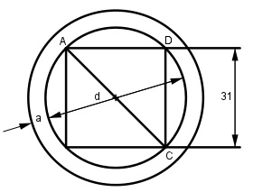

Aufgabe 229 Über einen Vierkantstahl mit einer Seitenlänge von 31 mm soll eine zylindrische Hülse mit einem äußeren Umfang von 150 mm geschoben werden. Wie groß ist die Wanddicke a der Hülse?

Ua = da * π |: π U --- = da π 150 mm da = ----------- = 47,8 mm π Satz von Pythagoras im Dreieck ACD: d2 = a2 + a2 = 312 mm2 + 312 mm2 = 1 922 mm2 |√ d = 43,8 mm da - d 47,8 mm – 43,8 mm a = -------- = --------------------- = 2 mm 2 2